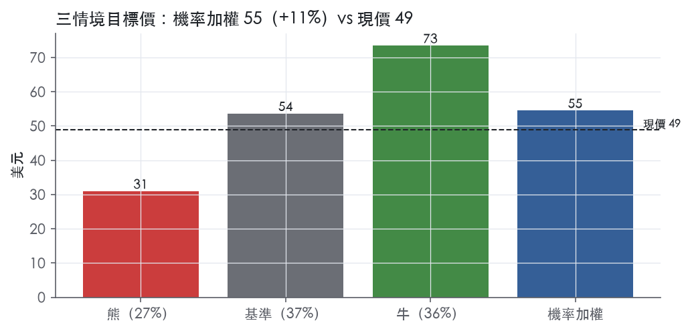
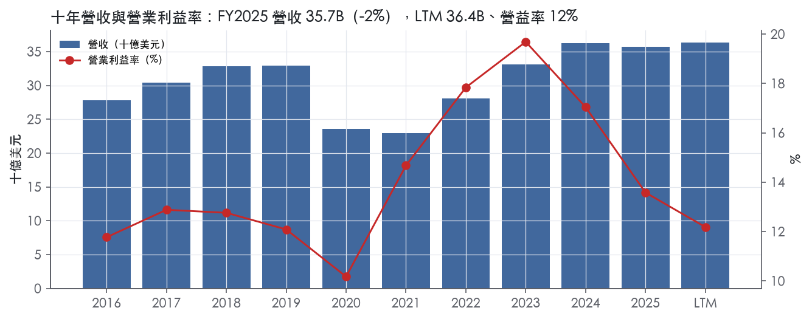
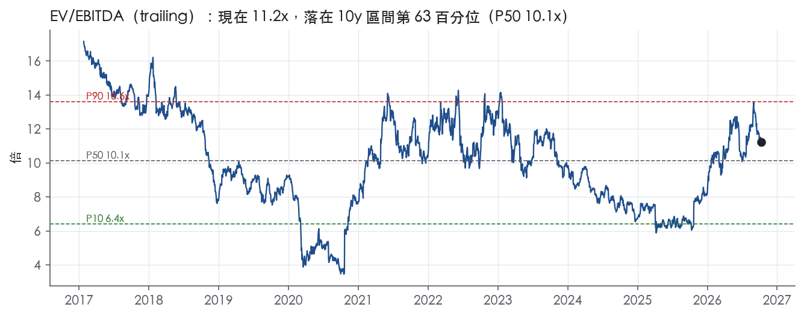
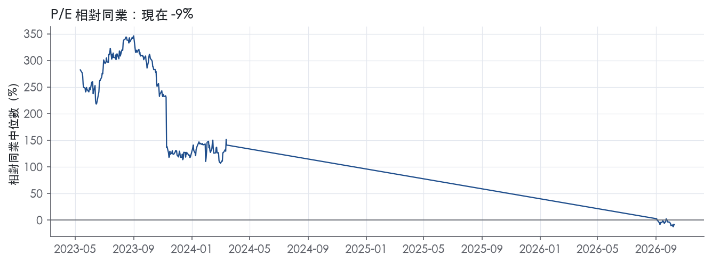
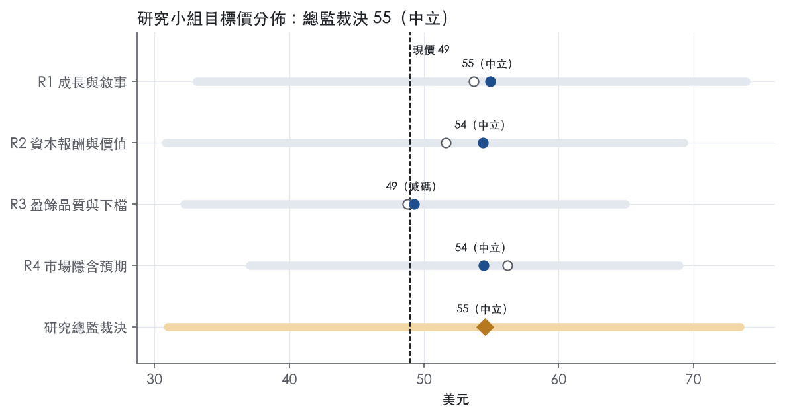
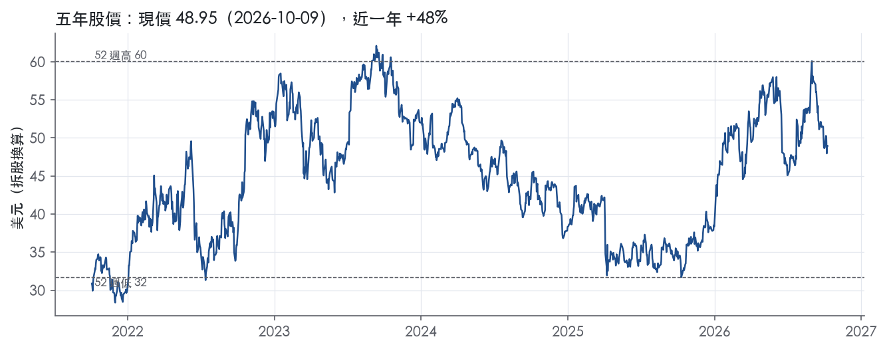

評等總表 › 能源 › SLB
中性偏多：市場把中東中斷當常態定價｜評等 中立｜目標價 55
| 報告日 | 評等 | 目標價 | 當時股價 | 超額報酬 |
|---|---|---|---|---|
| 2026-10-09 | 中立 | 54.53 | 48.95 | +3.6% |
| 評等 | 中立（邊界，鄰近加碼） |
| 12 個月目標價 | 55 美元 |
| 現價 | 48.95 美元（2026-10-09） |
| 預期報酬 | 股價 +11.4%＋股息 2.4%＝總報酬 +13.8%；同業籃門檻 10.2%，超額 +3.6% |
| 估值方法 | EV/EBITDA 10.1x，套在三年平均的EBITDA |
| 三情境 | 熊 31／基準 54／牛 73 |
| 研究流程 | 四位研究員兩輪辯論＋研究總監裁決 |
| 資料來源 | SEC EDGAR XBRL、Tiingo、FRED（全免費） |
中性偏多：市場把中東中斷當常態定價（研究總監裁決，四位研究員兩輪辯論後）
評等 中立（邊界，鄰近加碼）｜12 個月目標價 55 美元（總監三情境機率加權 55 與研究員中位數 54 各半）｜現價 48.95（2026-10-09）
預期報酬：股價 +11.4%＋股息 2.4%＝總報酬 +13.8%。同業籃門檻 10.2%，超額 +3.6%，離加碼的分界不到三個百分點，屬邊界評等（落在其他級距的機率約四成）。
估值方法：EV/EBITDA 10.1x，套在三年平均的EBITDA。三情境：熊 31（27%）／基準 54（37%）／牛 73（36%）。
什麼會讓研究總監改變看法：FY2026Q3 營收低於 FY2025Q3 的 8.93B，或部門稅前利潤率跌破 15.2% 且總債務續升，轉看空；FY2026Q4 在 9.74B 高基期仍年增且 2027 展望寫明中東恢復，轉看多。
| 過去四季（實際，FY2026Q2） | 未來四季 | 第 5–8 季 | 第 9–12 季 | |
|---|---|---|---|---|
| 營收（B） | 36.4B | 37.3B | 39.1B | 41.4B |
| 營收成長 | 2.5% | 2.5% | 4.8% | 6.0% |
| 營業利益率 | 12.2% | 12.8% | 13.3% | 14.0% |
| EPS（美元） | 2.09 | 2.33 | 2.58 | 2.93 |
| EPS 成長 | -28.1% | 11.3% | 10.7% | 13.5% |
| 每股股息（美元） | — | 0.00 | 0.00 | 0.00 |
| P/E（現價） | 23.4x | 21.0x | 19.0x | 16.7x |
| 股息殖利率（現價） | 2.4% | — | — | — |
過去四季為申報數字；預測為研究總監的假設、程式計算。倍數與殖利率都用現價計算，用來看現價對應各期獲利的高低。
| 情境 | 機率（歷史） | 故事 | 未來四季營收成長 | 第 5–8 季營益率 | 倍數 | 目標價 | 股價漲跌 |
|---|---|---|---|---|---|---|---|
| 熊 | 27%（22%） | 風險表第 1 條中東中斷延續疊加第 2 條上游支出下修，WC/RP 部門去槓桿、買回暫停，倍數落到 3y P50 附近 | -3.0% | 10.8% | 8.0x | 31 | -36.8% |
| 基準 | 37%（42%） | Q4'26 高基期年減後 2027 低基期轉正，charges 維持 2026 低水位，營益率三年回到 14%，倍數回自家中位數 | 2.5% | 13.3% | 10.1x | 54 | 9.6% |
| 牛 | 36%（36%） | 中東 2027 上半年恢復、有機營收轉正，WC/RP 利潤率回到一年前 18.6% 附近，ROIC 回升撐溢價至 5y P90 之下 | 5.0% | 15.0% | 12.0x | 73 | 50.1% |
目標價由程式依研究總監的驅動與倍數計算；機率由研究總監給定。括號內是歷史頻率：把這檔股票過去十年 12 個月報酬的波動形狀，置中在基準情境，結果落在各情境附近的比例。

四位研究員用不同方法各自估值，回應研究總監的質疑後交出第二輪，最後由總監逐點裁決。各研究員的主張見第七章，裁決理由見第八章，完整論證見《研究底稿》。
| 立場（一輪→二輪） | 加權目標價（一輪→二輪） | 評等（一輪→二輪） | 第二輪倍數 | 熊～牛目標價 | |
|---|---|---|---|---|---|
| R1 成長與敘事 | 中性→中性 | 54→55 | 中立→中立 | 10.1x | 33～74 |
| R2 資本報酬與價值 | 中性→中性 | 52→54 | 中立→中立 | 10.1x | 31～69 |
| R3 盈餘品質與下檔 | 中性→中性 | 49→49 | 減碼→減碼 | 10.1x | 32～65 |
| R4 市場隱含預期 | 看多→中性 | 56→54 | 加碼→中立 | 10.1x | 37～69 |
| 研究總監裁決 | 中性 | 55 | 中立 | 10.1x | 31～73 |
目標價由程式依各自的驅動與倍數計算；評等＝機率加權總報酬 − 同業籃門檻。
SLB 是一家全球能源技術公司，業務橫跨油氣勘探、鑽井、生產全鏈條的技術與服務。公司以近一個世紀的市場與技術領導地位，在超過100個國家提供服務，並致力於能源創新、數位規模化、產業去碳化與新能源系統開發¹。主要客戶為國家石油公司、大型綜合石油公司與獨立運營商，2025、2024、2023年均無單一客戶佔合併營收超過10%¹。SLB LTM（至FY2026Q2）營收36.37B美元，是全球規模最大的油田服務公司之一。
公司主要依四大分部（Division）組織：Digital、Reservoir Performance、Well Construction、Production Systems，外加All Other¹。Digital涵蓋雲端平台（Delfi、Lumi）、數位作業、探勘數據庫與專業服務，FY2026Q2營收697M美元，年增18%，稅前分部利潤率27.8%，為四大分部中利潤率最高²。Reservoir Performance聚焦評估、增產與介入服務（電纜測井、水力壓裂、修井），FY2026Q2營收1,556M美元，年減8%，利潤率14.9%，是本季唯一營收與利潤率同步衰退的核心分部²。Well Construction提供測量、鑽井液、鑽井設備與鑽頭，FY2026Q2營收2,742M美元，年減7%，利潤率15.2%²；兩者的衰退主因是中東地區持續的業務中斷²。Production Systems是目前最大且成長最快的分部，涵蓋OneSubsea海底生產系統（SLB持股70%）、人工舉升、完井、閥件與生產化學品，FY2026Q2營收3,771M美元，年增29%，利潤率15.5%，主要受惠ChampionX併入後貢獻870M美元營收²。All Other包含Asset Performance Solutions、Data Center Solutions與SLB Capturi（碳捕集合資公司，SLB持股80%）等新業務，FY2026Q2營收505M美元，年減13%²。各分部佔FY2026Q2總營收比重分別約為Digital 8%、Reservoir Performance 17%、Well Construction 31%、Production Systems 42%、All Other 6%（扣除內部消除前）。
公司按地理分為五大「Basin」：North America Land、Americas、Europe and Africa、Middle East and North Africa、Asia，再細分為GeoUnit以貼近區域客戶需求¹。FY2026Q2國際營收6,671M美元（年減3%），北美營收2,244M美元（年增36%），國際與北美營收比重約為74%：25%²。北美成長主要來自ChampionX併購後的生產化學品與人工舉升業務貢獻，國際營收年減則反映中東地區持續業務中斷的拖累²。公司通路以直接服務合約、設備銷售與數位平台SaaS訂閱／永久授權並行，Digital Exploration則透過授權數據庫銷售¹。地區間的季節性也值得留意：加拿大春季融雪與北海冬季天候會影響活動水平，第四季則因客戶年度預算去化而偏高（但北美可能因預算限制而偏低）¹。
FY2025Q3營收8.93B美元，年減2.5%，利潤率下滑至12.8%，當季完成ChampionX併購。FY2025Q4營收9.74B美元，年增5.0%，利潤率11.0%，現金流回升，CFO 3.00B美元、FCF 2.49B美元。FY2026Q1營收8.72B美元，年增3%，但GAAP EPS年減14%至0.50美元，調整後EBITDA年減12%至1.77B美元；公司稱「年初即遭遇中東地區廣泛業務中斷衝擊」，衝擊最集中在Well Construction與Reservoir Performance³。ChampionX當季貢獻營收838M美元、調整後EBITDA 199M美元³。FY2026Q2營收8.97B美元，季增3%、年增5%，GAAP EPS 0.52美元（季增4%、年減30%），調整後EBITDA 1.90B美元（季增7%、年減7%），CFO 1.36B美元、FCF 716M美元，董事會核准每股0.295美元季度股息²。公司稱「國際市場廣泛的環比成長——以拉美、歐非及亞洲離岸活動為首——抵銷了中東持續中斷的影響」，且「本季標誌著中東以外地區重回年增成長」²。該新聞稿未提供下一季具體財務指引數字。
公司策略聚焦三大成長引擎：Core（Reservoir Performance、Well Construction、Production Systems）、Digital、New Horizons of Growth¹。Core仍是「SLB最大的成長引擎」，公司將持續以「fit-for-basin」方式開發客製化技術以因應區域市場分化¹。Digital方面，公司定位為「獨特地能支援客戶的數位旅程」，以數據平台與代理式AI編排貫穿規劃與營運工作流程¹；FY2026Q1新聞稿並提到Digital年化經常性收入（ARR）年底再度超過1B美元，年增15%³。New Horizons of Growth涵蓋新能源（碳捕集CCS、低碳氫、地熱、關鍵礦產）與快速成長的Data Center Solutions業務，公司稱後者「預期將成為SLB未來投資組合的重大貢獻者」，FY2026上半年Data Center Solutions營收年增63%¹²。公司並於FY2025以全股票交易併購ChampionX，發行1.41B股、價值4.9B美元，強化在生產與回收領域的領導地位¹。整體看，ChampionX併購是近兩年最關鍵的結構性變化，把Production Systems推升為最大分部並明顯墊高北美營收基數，但也讓同比成長數字含有併購貢獻、需拆分比較才看得出有機成長真實強弱。中東地緣風險是目前最大的營收與利潤率逆風，第二季財報顯示若扣除中東，國際與北美營收才重回年增軌道，顯示核心油服業務的週期性仍主要受地緣政治而非需求結構驅動。Digital與Data Center Solutions雖佔營收比重仍小，但利潤率明顯高於傳統油服分部，是公司嘗試拉高整體估值倍數的敘事重點。

SLB 給窄護城河，評級落在窄的下緣；理由是技術、軟體與資料資產撐住了正的 ROIC 超額報酬，但產業週期在低谷會把 ROIC 壓到資本成本以下。趨勢判為穩定，有兩股力量互相抵銷：Digital 的軟體與資料業務在加深黏著度，ChampionX 併購帶進的商譽則在攤薄資本報酬。評級是窄還是無，取決於下一個下行週期的 ROIC 能不能守在資本成本附近；守不住就下修為無。
SLB 的優勢來源依強弱排序是無形資產、轉換成本、成本優勢，沒有網路效應與效率規模的證據。
無形資產（最強）：公司稱「SLB owns or controls one of the industry's leading portfolios of intellectual property, including but not limited to patents, proprietary information, trade secrets, and software tools and applications」¹。單一專利不構成壁壘，因為公司自己也承認「no particular patent or group of patents is material to SLB's business」¹。真正難複製的是探勘資料庫，原文形容為「a differentiated asset library of seismic surveys and other subsurface data」，涵蓋「key exploration and producing basins worldwide」¹。以 1926 年創立累積的地下資料與技術沿革來看，新進者無法靠砸錢在短期內追上。
轉換成本（中）：Petrel™、Techlog™ 與 Delfi™ 平台被用來模擬油藏開發方案，並規劃鑽井、完井與生產設計¹。這類軟體嵌進客戶的核心工程流程，換掉它要重訓工程師、重建模型、遷移歷史資料，轉換成本實質存在。公司另外提供從地端到雲端的遷移、資料清理與搬移服務，等於把客戶的資料架構和自家平台綁在一起¹。這層轉換成本只覆蓋 Digital 與部分整合合約，鑽頭、泥漿、壓裂這類傳統服務的轉換成本偏低。
成本優勢（弱）：公司在超過 100 個國家營運、員工約 109,000 人，並有全球研發中心網路支撐各分部¹。全球據點與在地人才讓 SLB 能在偏遠或高門檻地區承接整合型專案，這是小型同業做不到的規模優勢。但 10-K 也寫明產業競爭要素包含「price differentiation」，且「SLB has numerous competitors, both large and small」¹，所以規模並沒有轉化成穩定的定價權。
量化底稿支持「有超額報酬」，但不支持「寬」：超額報酬幅度薄，而且隨週期擺盪。
ROIC 十年平均 12.3%，資本成本代理值 10.2%，平均利差只有 2.1%。ROIC 有資料的 9 年中只有 5 年高於資本成本，低點 7.3% 出現在 FY2018 與 FY2020。ROIC 標準差 4.6%，高點 20.1% 在 FY2023，高低差反映的是油服週期，而不是護城河的厚度。
利潤率的穩定度比 ROIC 好：營業利益率十年平均 14.2%、標準差 2.9%，最低 10.2% 出現在營收年減 28.3% 的 FY2020。營收大跌將近三成時營益率仍守在雙位數，說明技術與服務組合有一定的價格韌性。FCF 利潤率平均 12.0%、標準差 2.6%，現金創造力在整個週期內都穩定，這是支撐窄評級的最強數字證據。
數字與主張有一處衝突：FY2017–FY2020 的 ROIC 連續四年低於資本成本代理值（至），單看這段，「5 年以上有把握」並不成立。我仍維持窄評級，理由有三。第一，代理值是用現在的 10 年債殖利率 5.22%加碼後回套所有年度，對利率偏低的早期年度標準過嚴。第二，FY2021 起連續 5 年 ROIC 高於代理值，FY2025 仍有 13.2%。第三，ROE 十年平均只有 0.3%，主因是 FY2019、FY2020 的大額減損，這是會計上的資產重估，不直接代表營運報酬率。
最大的侵蝕來源是客戶資本支出的週期，其次是併購稀釋報酬，再來是長期能源轉型。
目標倍數相對同業應該持平，不給溢價：ROIC 平均利差只有 2.1%，而且下行年度會跌破資本成本，撐不起長期高倍數。目前 EV/EBITDA 位於自身 5 年分位 68.0%，高於 5 年中位數 10.1x；在 ROIC 回到 FY2023 水準之前，目標倍數不宜高於這個中位數。只有在 Digital 的轉換成本證據擴大、ROIC 在下一個低谷守住資本成本時，才有理由上修到寬並給溢價。
| 指標 | 最新 | 十年平均 | 標準差 | 最低 | 最高 |
|---|---|---|---|---|---|
| ROIC | 13.2% | 12.3% | 4.6% | 7.3% | 20.1% |
| 營業利益率 | 13.6% | 14.2% | 2.9% | 10.2% | 19.7% |
| FCF 利潤率 | 13.4% | 12.0% | 2.6% | 7.5% | 15.3% |
| ROE | 14.3% | 0.3% | 26.7% | -58.7% | 22.2% |
程式計算。資本成本代理值（10 年債＋5%）：10.2%；ROIC 平均減資本成本：2.1%；ROIC 有資料的 9 年中，高於資本成本 5 年。
LTM 營業現金流／淨利 2.11x、FCF／淨利 1.55x，盈餘有紮實的現金支撐，槓桿淨負債／EBITDA 0.98x 也在安全區間。但 FY2025 存貨成長比營收快 17 個百分點、且因 ChampionX 收購連續多季出現「charges & credits」重組與整合費用，稀釋了 GAAP 數字的可讀性，所以不給「高品質」。
現金是跟上的，而且跟得很緊。LTM 營業現金流／淨利 2.11x（綠燈，規則 ≥1.00x）、近三年平均 1.66x，均遠高於十年平均的 0.29x。FCF／淨利 LTM 1.55x、近三年 1.20x，同樣遠優於十年平均 0.23x。應計比率 LTM -6.2%、近三年 -5.3%，均為負值且優於門檻 ≤0.0%，代表淨利不是靠應計堆出來的。但要注意近兩季 CFO 波動大：FY2026Q1 CFO 僅 0.49B、FY2026Q2 回升至 1.36B（資料包），屬季節性應收款/應付款週期，不是結構性惡化。全年口徑 2025 年「generated $6.5 billion of cash flow from operations and $4.1 billion of free cash flow」²（此為 10-K MD&A 轉述 2025 executive overview 口徑，與 FCF 4.1B 字面一致）。
SLB 的非 GAAP 調整主要是「charges & credits」，2026Q2 新聞稿顯示 GAAP 稀釋 EPS 0.52 美元、調整後 EPS 0.55 美元，GAAP 淨利 786M、調整後淨利 833M²。差額來自：裁員費用（FY2025 Q1 workforce reductions 158M、Q2 workforce reductions 66M）、其他併購整合費用（Q1 49M、Q2 35M）、權益法投資減值 69M，以及 Palliser APS 資產出售利得 149M（這是credit，反向沖銷費用）⁴。2025 全年 charges & credits 淨額達 -1,107M（相對 2024 年 -541M、2023 年 -110M，逐年擴大）⁴。
我的判斷：裁員與整合費用應視為真實現金成本，不是純粹一次性，因為 ChampionX 整合從 FY2025Q1 持續到 Q2 多季出現，顯示整合期拉長。Palliser 資產出售利得 149M 是真正一次性、非經常性，估值不該賦予倍數。利息收入中「Gain on sale of Palliser APS project」149M、「Gain on sale of Liberty shares」36M（2023）等投資處置利得也屬一次性⁴。
槓桿與回饋力度都健康，但近期回饋強度在上升。淨負債／EBITDA LTM 0.98x（綠燈，≤1.50x），遠低於十年平均 1.37x；利息保障倍數 LTM 8.65x（綠燈，≥8.00x），近三年平均更高達 11.2x。稀釋股數年變動 LTM -0.6%，顯示淨減少股數、回購大於增發。（股利＋回購）／淨利 LTM 54.7%，較十年平均 -8.1% 明顯提升，顯示公司正加大對股東的現金回饋，公司本身也明確表態「committed to returning more than $4 billion to shareholders in 2026 through dividends and share repurchases」⁴。2025 年實際返還 「enabling us to return $4.0 billion to shareholders」⁴，但 2025 全年 FCF 僅 4.1B（口徑同上），回饋幾乎等於全部自由現金流，留給去槓桿或再投資的餘裕不大。2016 年股票回購計畫累計已執行 5.9B，授權總額未在本節重複列出金額單位換算，原文載明「cumulatively repurchased $5.9 billion of its common stock under this program as of December 31, 2025」⁵。
估值應以 GAAP 為主、非 GAAP 為輔助參考，但對 2025–2026 年的「charges & credits」(整合、裁員、減值) 可以合理加回，因為這些與 ChampionX 整合高度相關且公司已明確分項揭露金額。FY2019 的大額減損（淨利率-37pp 事件）應該在估值模型中完全排除，避免低估常態盈餘能力，但現金流指標顯示當年經營現金流並未惡化，說明核心業務仍健康，不需要對未來盈餘做系統性打折。槓桿（淨負債／EBITDA 0.98x）與利息保障（8.65x）都在安全區間，不構成限制估值倍數的理由，但近期回饋／淨利比率已達54.7%、幾乎用盡全年FCF，若油價或 Middle East 活動持續受壓（原文提及「continued disruptions in the Middle East」）²，可能壓縮未來回購空間，建議對 P/FCF 倍數保持審慎、不宜用高端分位定錨。
| 項目 | LTM | 近三年 | 十年 | 燈號 | 規則 |
|---|---|---|---|---|---|
| 營業現金流／淨利 | 2.11x | 1.66x | 0.29x | 綠 | ≥1.00x 綠、<0.80x 紅 |
| 自由現金流／淨利 | 1.55x | 1.20x | 0.23x | 綠 | ≥0.90x 綠、<0.60x 紅 |
| 應計比率（(淨利−CFO)／平均總資產） | -6.2% | -5.3% | -9.9% | 綠 | ≤0.0% 綠、>5.0% 紅 |
| SBC／營收 | 0.9% | 0.9% | 1.1% | 綠 | ≤3.0% 綠、>8.0% 紅 |
| 淨負債／EBITDA | 0.98x | 0.75x | 1.37x | 綠 | ≤1.50x 綠、>3.00x 紅 |
| 利息保障倍數（營業利益／利息） | 8.65x | 11.2x | 8.10x | 綠 | ≥8.00x 綠、<3.00x 紅 |
| 稀釋股數年變動 | -0.6% | 0.0% | 0.6% | 綠 | ≤0.0% 綠、>3.0% 紅 |
| （股利＋回購）／淨利 | 54.7% | 37.7% | -8.1% | 綠 | ≥50.0% 綠、<0.0% 紅 |
| 存貨成長 − 營收成長（FY2025） | +16.6pp | — | — | 紅 | ≤5pp 綠、>15pp 紅 |
程式計算；燈號以 LTM（無則近三年平均）判定。
| 風險 | 觸發指標（看什麼數字、在哪裡看） | 對 EPS 的影響方向與粗略幅度 | 未來 12 個月發生機率（高／中／低） | 出處 |
|---|---|---|---|---|
| 中東地緣中斷持續壓縮 Reservoir Performance／Well Construction 利潤率 | 季報 Division 表：Reservoir Performance 與 Well Construction 的 pretax segment operating margin（bps 年變化）；International 營收年增率 | 負向，中大：FY2026Q2 Reservoir Performance 利潤率年減370bps、Well Construction 年減338bps，兩者 EBITDA 合計年減約17-20% | 高 | 8-K 財報新聞稿（2026-07-24） |
| 油氣客戶資本支出（upstream spending）隨油價轉弱 | 北美／國際營收年增率；10-K 揭露北美上游支出下降幅度 | 負向，大：扣除ChampionX後FY2026Q2全球營收年減5%、國際年減6%、北美年減1% | 高 | ²；¹ |
| ChampionX 整合效益不如預期，稀釋股數墊高但協同效益未落地 | ChampionX 貢獻營收／EBITDA（季報揭露）對比整合費用（merger & integration 費用線） | 負向，中：FY2025merger & integration 費用302M美元，稀釋股數因收購增加141M股 | 中 | ⁶；¹ |
| 美元走強侵蝕海外成本與衍生品評價 | 10-K Item 7A 揭露的美元10%升值對遠期合約未實現價值影響；美元兌一籃子外幣匯率 | 負向，小：10%美元升值使遠期合約未實現價值減少154M美元（主要為避險、對盈餘影響有限） | 中 | 10-K 年報 FY2025 Item 1A（風險因素） |
| 商譽／長期資產減損風險（SLB Capturi 等新業務） | 年度商譽減損測試結果；SLB Capturi 現金流實際 vs. 14.75% 折現率假設 | 負向，小中：FY2025已計提SLB Capturi商譽減損210M美元，折現率上升50bps將再增約32M美元 | 低 | 10-K 年報 FY2025 Item 1A（風險因素） |
中東中斷是當前最大、最確定會動盈餘的風險。FY2026Q2財報明確點名中東持續中斷，拖累 Reservoir Performance 營收年減8%、利潤率年減370bps，Well Construction 營收年減7%、利潤率年減338bps²。業務概況章也指出，扣除中東後國際與北美營收才重回年增軌道，顯示中東中斷幾乎是全公司有機成長的唯一負面因子。這條風險可直接監測：每季財報的 Division 表、International 營收年增率即可追蹤，不需等待總體數據。
上游資本支出隨油價循環走弱，是結構性、非一次性的風險。10-K 揭露北美上游支出下降但公司靠 Data Center Solutions 彌補，國際市場則因沙烏地、墨西哥、Sub-Saharan Africa 活動降溫而衰退¹。FY2026Q2扣除併購影響後，全球營收仍年減5%，顯示這不是基期效應，而是真實的需求收縮²。油服業的營收-利潤率連動性高（FY2025全年營益率已從17.0%降至13.6%，年度表），油價每輪下行都會重演FY2020式的衝擊。
ChampionX 整合是公司自己承認的執行風險，也是稀釋股數墊高後唯一能證明「物有所值」的關鍵變數。10-K Forward-Looking Statements 明確列出「SLB inability to integrate the ChampionX business successfully and to achieve anticipated synergies」為風險因子之一⁶。公司為此支付4.9B美元全股票對價、發行141M股，稀釋股數從1,401M增至1,444M以上（股權變動表）¹。若協同效益不如預期，EPS 稀釋效果將無法被營收成長抵消。目前可觀測指標是每季財報揭露的 ChampionX 貢獻營收與 EBITDA，以及持續的 merger & integration 費用線（FY2025全年302M美元）¹。
匯率風險對盈餘的直接衝擊有限，但值得列入監測清單。約70%營收以美元計價，但海外費用以當地貨幣計，美元走強會壓低費用端的美元換算成本（對毛利率略有利），但衍生品組合會有未實現評價波動⁶。公司揭露10%美元升值會使遠期合約未實現價值減少154M美元，但強調此損益會被underlying transaction的損益抵消，對未來盈餘「無影響」⁶。因此這條風險主要是波動性而非趨勢性，列為中等機率、小幅度。
商譽與長期資產減損是財報技術性風險，機率低但一旦發生會造成一次性EPS衝擊。FY2025已對 SLB Capturi（碳捕集合資公司）計提210M美元商譽減損，使用14.75%折現率，公司自己揭露折現率變動50bps會讓減損金額變動32-36M美元⁶。核心四大分部（Digital、Reservoir Performance、Well Construction、Production Systems）FY2025qualitative assessment顯示公允價值遠高於帳面值，暫無減損壓力⁶，但若油價長期低迷侵蝕現金流預期，不能排除未來測試轉為定量評估。
稀釋股數的長期軌跡值得單獨追蹤。公司過去十年(FY2016至FY2025)稀釋股數從1.36B緩步增至1.44B，ChampionX併購又一次性增加141M股。若未來持續用股票而非現金做併購，EPS成長將被稀釋效果侵蝕，這點不在10-K風險因子的傳統敘述裡（10-K只談整合風險，不談股權稀釋本身），但對估值模型影響直接。
Data Center Solutions 的高成長敘事尚未經過一個完整景氣循環的壓力測試。公司將 Data Center Solutions 定位為「未來多年最快成長業務」，FY2026上半年年增63%、FY2025全年成長121%¹，但此業務規模仍小（All Other 整體僅佔FY2026Q2總營收約6%），且高度依賴與hyperscaler的夥伴關係——若AI資本支出週期轉弱或客戶集中度過高，目前的高成長率可能無法外推，而10-K風險因子章節並未對此單獨揭露具體的客戶集中或合約期限風險。
現價 48.95 對應 trailing（過去四季）P/E 23.4x、EV/EBITDA 11.1x、EV/EBITA 16.4x、EV/Sales 2.2x、FCF 殖利率 6.6%。主要估值倍數 EV/EBITDA 現在 11.2x，落在10 年區間第 63 百分位（P10／P50／P90 = 6.4x／10.1x／13.6x）。

把程式的機械基準預測放到現價下，市場付的前瞻倍數是：EV/EBITDA（未來四季） 10.5x、P/E（未來四季） 22.4x、EV/EBITDA（第 5–8 季） 9.8x、P/E（第 5–8 季） 21.7x。反推 DCF 顯示市價隱含未來五年營收年成長 2.0%（WACC 9.0%、終值成長 3.0%、FCF 利潤率 13.5%，SBC 不加回）。
| 倍數 | 現在 | 10 年 P10 | 10 年 P50 | 10 年 P90 | 現在分位 | 全期 P50 |
|---|---|---|---|---|---|---|
| P/E | 23.4x | — | — | — | — | 21.5x |
| EV/EBITDA | 11.2x | 6.4x | 10.1x | 13.6x | 62.7% | 10.1x |
| EV/EBITA | 16.6x | 8.8x | 15.0x | 23.6x | 61.9% | 15.0x |
| EV/EBIT | 18.2x | 9.6x | 16.6x | 27.7x | 62.2% | 16.6x |
| EV/Sales | 2.2x | 1.5x | 2.4x | 3.4x | 41.7% | 2.4x |
| P/S | 2.0x | 1.3x | 2.0x | 3.1x | 48.8% | 2.0x |
| P/FCF | 15.3x | 9.6x | 17.1x | 29.4x | 37.4% | 17.1x |
trailing 倍數（股價 ÷ 過去四季）；分位以每個交易日計算。
同業籃：LBRT, OII, ACDC, WTTR, NESR, HOS（SIC 1389 同業 20 家中，CY2025 營收最接近的 6 家）。評等門檻 10.2%：同業「倍數不變下持有一年」的隱含報酬中位數（＝ FCF 殖利率 ×(1＋g)＋g，g 為 5 年營收年複合成長並夾在 −2%～8%），每家夾在 0～15%、P/E 低於 5 倍視為資料可疑而排除，中位數再限制在 10 年債到 10 年債＋5% 之間（同業原始中位數 13.4%）；排除：ACDC（隱含報酬算不出來）、WTTR（隱含報酬算不出來）、NESR（隱含報酬算不出來）。
| 代號 | 市值 | 5 年營收 CAGR | 營益率 | ROIC | P/E | 5 年 P/E 中位數 | EV/EBITDA | P/FCF | 隱含報酬 |
|---|---|---|---|---|---|---|---|---|---|
| SLB | 72.6B | 8.6% | 12.2% | 13.2% | 23.4x | 19.3x | 11.1x | 15.1x | 15.1% |
| LBRT | 3.2B | 32.9% | 1.3% | 2.5% | 25.6x | — | 7.5x | — | 12.2% |
| OII | 4.5B | 8.8% | 10.4% | — | 12.8x | — | 10.7x | 20.0x | 13.4% |
| ACDC | 0.8B | 28.8% | -15.0% | -11.4% | — | — | 14.2x | — | — |
| WTTR | — | 18.4% | 3.5% | 2.9% | — | — | — | — | — |
| NESR | 2.1B | 9.7% | — | 7.1% | — | — | — | — | — |
| HOS | 1.1B | 12.0% | 5.6% | 3.2% | 27.8x | — | 2.9x | 4.6x | 31.3% |
| 同業中位數 | 15.2% | 3.5% | 2.9% | 25.6x | — | 9.1x | 12.3x | 10.2% |
全部 trailing，程式以各公司 SEC XBRL 與 Tiingo 行情計算；第一列為本檔。
P/E 相對同業中位數：現在 -8.6%，過去 1 年平均 —、3 年 —、5 年 —；EV/EBITDA 相對同業中位數：現在 22.9%，過去 1 年平均 23.2%、3 年 64.2%、5 年 100.2%。

程式的機械基準（成長率從過去四季年增率三年收斂到 6%、利潤率持平）用 EV/EBITDA 10 年 P50（trailing） 估值得到 48（-2.0%），用現行倍數得到 53。這兩個數字只是參考點，不是本報告的目標價；研究員對這個定價的回應在第七章。
下表是每位研究員第一輪（各自獨立）與第二輪（回應研究總監的質疑後）的結果。目標價全由程式依各自的假設計算。
| 立場（一輪→二輪） | 加權目標價（一輪→二輪） | 評等（一輪→二輪） | 第二輪倍數 | 熊～牛目標價 | |
|---|---|---|---|---|---|
| R1 成長與敘事 | 中性→中性 | 54→55 | 中立→中立 | 10.1x | 33～74 |
| R2 資本報酬與價值 | 中性→中性 | 52→54 | 中立→中立 | 10.1x | 31～69 |
| R3 盈餘品質與下檔 | 中性→中性 | 49→49 | 減碼→減碼 | 10.1x | 32～65 |
| R4 市場隱含預期 | 看多→中性 | 56→54 | 加碼→中立 | 10.1x | 37～69 |
| 研究總監裁決 | 中性 | 55 | 中立 | 10.1x | 31～73 |
目標價由程式依各自的驅動與倍數計算；評等＝機率加權總報酬 − 同業籃門檻。
分歧度：第一輪 加權目標價 49～56（區間＝現價的 15%）· 倍數 10.1～10.6x · 立場 中性×3、看多×1；第二輪 加權目標價 49～55（區間＝現價的 12%）· 倍數 10.1～10.1x · 立場 中性×4（方向一致）。

| 研究員 | 第二輪主張 | 堅持的理由 |
|---|---|---|
| R1 成長與敘事 | 中性，企業價值倍數 10.1 倍，未來一年營收只成長 1.5%。 | 中東以外地區已重回年增，第二年營收成長維持 6%。 |
| R2 資本報酬與價值 | 中性，企業價值倍數 10.1 倍，錨在自家十年中位數。 | 股東回饋部分靠舉債，投入資本報酬率回升前不給溢價。 |
| R3 盈餘品質與下檔 | 中性，企業價值倍數 10.1 倍，用未來一年盈餘當基礎。 | 一次性費用連三年擴大，應視為經常性成本。 |
| R4 市場隱含預期 | 由偏多轉中性，企業價值倍數 10.1 倍。 | 市場隱含自由現金流利潤率 13.5%，高於十年平均 12.0%。 |
每位研究員的逐條回應與完整論證見《研究底稿》（SLB_研究底稿_2026-10-13.docx）。
| 分歧點 | R1 | R2 | R3 | R4 | 什麼資料會分出勝負 |
|---|---|---|---|---|---|
| NTM 營收成長 | 1.5%：四季拆解，Q4'26 對 9.74B 年減 | 3.0%：未逐季拆 | 2.5%：未逐季拆 | 3.0%：引有機年減 5% 卻設 3% | 2027-01 下旬 FY2026Q4 營收對 9.74B 的年增率 |
| Q5–Q8 成長（中東恢復時點） | 6.0%：2027 上半年部分恢復加低基期 | 4.0%：營運拖累未結束 | 4.5% | 4.8%：國際降溫不只中東，退回基準 | FY2026Q4 財報中東以外國際營收年增率；2027 展望是否寫明中東恢復 |
| 營益率路徑 y1→y3 | 12.8／13.5／14.0% | 13.0／13.1／13.2%：回十年中位數 | 12.2／12.8／13.2%：charges 經常化 | 12.5／13.3／14.0%：charges 不重複但低於十年平均 | FY2026Q3 GAAP 與調整後 EPS 差額；WC／RP 部門利潤率年減幅 |
| 資本支出率（FCF 口徑） | 4.8%（基準） | 4.8%，但指出淨負債路徑與 4B 承諾衝突 | 6.5%：公司口徑 FCF 4.1B 差額 | 6.0%：取 FY2023 的 5.9% | 2027-01 下旬 FY2026 年報公司口徑 FCF 與資料包口徑差額 |
| 主尺期間口徑 | mid_cycle | mid_cycle | ntm（相對市場持平倍數 −10%） | mid_cycle | 規則問題；FY2026 全年 GAAP 營益率是否低於十年中位數 13.2% |
分歧一：NTM 營收成長——裁 own 2.5%，採 R1 的逐季框架、修正 Q3'26。 R1 是四位裡唯一把 NTM 拆成四季的人：Q4'26 對上 9.74B，含 Digital 年底集中認列 825M（8-K 2026-04-24，R1 引用），這一季年減的機率確實高。但他說 Q3'26 起「大致就是有機成長」，被 R3 引用的 10-K MD&A 推翻：FY2025Q3 只含 ChampionX 兩個月 579M，FY2026Q2 整季是 870M（8-K 2026-07-24），所以 Q3'26 仍有約一個月的併購墊高；加上 Q2'26 季增 3%、中東以外地區重回年增（8-K 2026-07-24），Q3'26 會比 R1 假設的好。R2、R4 的 3.0% 沒有逐季拆解，R4 引用「扣除 ChampionX 全球年減 5%」反而是壓低的證據。裁 2.5%：高於 R1 是因 Q3'26 墊高，低於 R2／R4 是因 Q4'26 高基期。
分歧二：Q5–Q8 成長與營益率——裁 R4（4.8%、13.3%），R1 的 6% 放進牛情境。 R1 的論點是低基期加 2027 上半年中東部分恢復。缺口在：8-K 2026-07-24 只說中東以外重回年增，沒有任何中東恢復時點的陳述；10-K FY2025 Item 1 寫的國際降溫涵蓋沙烏地、墨西哥、SSA，R1 看不到風險章，只把它放到熊情境，基準也該反映。R2 的 4.0% 偏低，缺口是他看不到新聞稿，無法衡量拉美、歐非、亞洲離岸帶動的季增轉折。R4 同時看到新聞稿與 10-K 降溫段落，退回基準是兩邊證據都納入後的結果。y2 營益率同理：部門利潤率 15.2%→15.6% 已止跌（8-K 2026-07-24），但 WC／RP 年減 338／370bps 不會一年補完，13.3% 比 R1 的 13.5% 更貼近。
分歧三：營益率 y1 與 y3——y1 取 R1 的 12.8%，y3 裁 R4 的 14.0%。 y1：R3 的過橋寫「Q4'25 部門利潤率 18.5% 滾出大於 charges 滾出」，但模型用 GAAP 口徑——FY2025Q4 GAAP 營益率 11.0%是八季最低，含 −561M charges（10-K MD&A，R3 引用）。GAAP 口徑滾出的是低值不是高值，R3 的過橋方向反了。R1 的 12.8% 是 FY2026Q2 實際值，2026 年 Q1／Q2 charges 已縮到 GAAP 與調整後 EPS 差 0.02–0.03（8-K 2026-04-24、2026-07-24），是最直接的錨；R2 的 13.0% 多出的正常化，他看不到新聞稿無法確認中東拖累是否仍在。y3：R2／R3 的 13.2% 是劇本預設。R4 的 E2 基準率承認從 12–13% 起點三年到 15% 沒有非谷底先例，所以把 y3 砍到 14.0%、低於十年平均 14.2%。選 R4 的理由：十年中位數含 FY2016–FY2020 的油價崩盤與疫情年；2025 年 −1,107M charges（10-K FY2025 Item 7）含 Capturi 減損 210M、裁員 158M／66M、整合 49M／35M，與 ChampionX 整合綁定；Digital 利潤率 27.8%、有機年增 12%，Production Systems 利潤率季增 138bps（8-K 2026-07-24），組合效果向上。R2／R3 沒有回答「ChampionX 後的 SLB 為何要回到含疫情年的中位數」。
分歧四：資本支出率——裁 R3 的 6.5%。 公司口徑 2025 年 FCF 4.1B（10-K FY2025 Item 7）低於資料包 4.79B，差額是 APS 與震測投資，R3 視為真實再投資，這點 R4 也承認，但 R4 取 6.0% 的理由只是「接近 FY2023 的 5.9%」，沒有說明為什麼單一年度比公司口徑差額更有代表性。另一個理由來自 R2 的模型限制：基準 NTM 期末淨負債 3.93B與公司 2026 年逾 4B 回饋承諾（10-K FY2025 Item 7）不可能同時成立，模型買回按 LTM 持平；較高的資本支出率部分補償這條偏樂觀的淨負債路徑。
分歧五：主尺期間口徑——裁 mid_cycle（R2 立場）。 R3 用 ntm 配 10.1x，程式檢查表顯示相對市場持平倍數 −10%，等於把中東壓低的單一年度當常態付倍數。劇本指定 ebitda@mid_cycle；R3 的 Q5 回應只辯護錨的窗口（1y 對 5y／10y），沒有為 ntm 口徑辯護。
漂移處理。 漂移表中 R2 向中位數靠攏 67%，逐條核對：V1 是我要求改回歷史起點、V2 是我指出熊情境利潤率比 FY2020 更差、V4 基於 10-K Item 7 的 charges 分項，三者都附證據且方向由審查意見決定。R4 由看多轉中性是 E1 的 FCF 過橋失敗，論據被推翻而非靠攏。R1 遠離中位數，R3 幾乎未動。本輪無退回的漂移。 另點明：四位都沒有用利率壓倍數，倍數低於現行的理由全是個股因素。
與機械基準不同的驅動：
目標倍數 10.1x EV/EBITDA @ mid_cycle。 錨是自家 trailing 帶 5y P50 與 10y P50，同為 10.1x，劇本指定錨，三年平均 EBITDA 配 trailing 帶中位數。低於現行 11.2x（5y 68% 分位）的理由：ROIC 13.2%未回 FY2023 的 20.1%，護城河章評窄的下緣並明寫 ROIC 回升前不宜高於中位數；charges 2023→2025 連三年擴大；回饋逾 4B 部分靠舉債，總債務 9.67B→11.14B（FY2026Q2）。相對市場現行前瞻倍數：市場對基準預測付 NTM 10.5x、Q5–Q8 9.8x，10.1x 落在兩者之間，等於說市場現價的倍數大致公允、分歧在盈餘端。相對同業：10.1x 高於同業中位數 9.1x，但低於現行 22.9% 的溢價（同業表）；同業籃六家營益率中位數 3.5%、ROIC 2.9%，不具定價參考，不用它定錨也不用它壓倍數。
牛情境取 R1（0.36）：中東 2027 上半年恢復、有機營收轉正，WC／RP 利潤率回到一年前 18.6% 附近，ROIC 回升撐溢價。成長 5／9／7%、營益率 13.5／15.0／16.0%、倍數 12.0x（低於 5y P90 12.5x）。不微調的理由：R1 牛相對其基準 +37%，低於置中分布 P75 的 +40%，不算過度樂觀；y3 16.0% 需回到 FY2022–24 的區間，在中東恢復加 ChampionX 綜效下成立。資本支出率沿用我的 6.5%，程式算出的牛目標價會略低於 R1 的 73.91。
基準情境（0.37）：上述裁決。R1 與 R4 的基準點估分別為 53.94 與 54.23，我的驅動介於兩者之間，點估由程式精算。
熊情境取 R3（0.27），對應風險表第 1 條（中東中斷延續壓縮 WC／RP 利潤率）與第 2 條（上游支出隨油價走弱）：成長 −3／−5／+1%、營益率 11.2／10.8／11.3%（三年都高於 FY2020 的 10.2%）、買回暫停（股數變動 0%）、倍數 8.0x（3y P50 8.2x 附近）。不選 R2 的 −42% 深熊：R2 看不到風險章，熊情境自訂機制；R3 用部門數據重建，WC 營收 −7% 對利潤率 −338bps、RP −8% 對 −370bps（8-K 2026-07-24）是可觀測的去槓桿係數。不選 R4 的熊：營收 0／1／3% 幾乎不是衰退，只靠倍數壓到 8.2x，與風險表第 2 條不對應。
機率對照歷史：R1 牛（+37%）與 R3 熊（−33%）套在這檔股票的置中分布，程式對 R1 的對照是牛 36／基準 40／熊 24，對 R3 是 36／35／29，我的組合介於其間。我給 36／37／27：牛與歷史持平，基準與熊各偏 2–3 點，在 10 點以內，牛熊順序與歷史一致。熊略低於歷史的公司特有證據：淨負債／EBITDA 0.98x（盈餘品質章）、FY2020 營收 −28.3% 時 FCF 仍有 1.83B、股息率 2.4%，被迫賣出的尾部薄；且風險表第 1 條的中東中斷已在基準情境算了三季（FY2026Q1 起），不能在熊情境重複計入。牛不抬高的理由：有機營收連兩季 −7%／−5%（8-K 2026-04-24、2026-07-24），非谷底起點三年到 16% 的先例為零（R4 E2）。本研究部過去 22 份報告熊皆高於牛，這份牛 36 對熊 27，與歷史方向一致。
差距在盈餘不在倍數：市場對基準預測付 Q5–Q8 9.8x，反推 DCF 隱含 5 年營收成長 2.0%，而我們的基準成長 2.5%→4.8%→6.0%、營益率從 12.8% 回到 14.0%，差在 rev_growth_y2 與 op_margin_y3——即中東恢復速度與 2025 年 charges 不重複；我們的倍數 10.1x 與市場現付倍數幾乎重疊。R4 指出的反向差距也成立：市場隱含 FCF 利潤率 13.5% 高於十年平均 12.0%（護城河章量化底稿），所以我們用 6.5% 的資本支出率把現金轉換拉回公司口徑。立場中性偏多：基準情境含 2.4% 股息略高於 10.2% 門檻，超額主要來自牛熊不對稱與機率修正；若程式評等為中立，與立場一致；若為加碼，我們不升為看多的原因是 R2 指出的模型淨負債路徑偏樂觀（回饋按 LTM 持平、低估逾 4B 承諾），以及中東恢復時點我們沒有資訊優勢。
現價 48.95 → 點估目標價 54 → 機率加權目標價 55 → 目標價 55，差距拆成五段：成長順延 +0 美元（市場現行倍數 10.3x 一年後持平、獲利照機械基準）；倍數差 -1 美元（總監倍數 10.1x vs 市場持平倍數 10.3x，同一機械基準預測）；盈餘差 +6 美元（總監預測的三年平均EBITDA 8.2B vs 機械基準 8.1B，同一倍數）；情境不對稱 +1 美元（機率加權減點估）；研究小組平均 -0 美元（總監機率加權 55 與研究員第二輪中位數 54 各半）。各段相加等於目標價減現價。本階段未接賣方共識，差距以市場隱含預期為對照。
| 驅動 | 機械基準 | 研究總監 | 差異 |
|---|---|---|---|
| 未來四季營收成長 | 3.7% | 2.5% | -1.2 pp |
| 第 5–8 季營收成長 | 4.8% | 4.8% | ＝ |
| 第 9–12 季營收成長 | 6.0% | 6.0% | ＝ |
| 未來四季營益率 | 12.5% | 12.8% | +0.3 pp |
| 第 5–8 季營益率 | 12.9% | 13.3% | +0.4 pp |
| 第 9–12 季營益率 | 13.2% | 14.0% | +0.8 pp |
| D&A／營收 | 7.6% | 7.6% | ＝ |
| 資本支出／營收 | 4.8% | 6.5% | +1.8 pp |
| SBC／營收 | 0.9% | 0.9% | ＝ |
| 稅率 | 19.3% | 19.3% | ＝ |
| 股數年變動 | 5.0% | -0.6% | -5.6 pp |
研究總監只寫偏移，未寫的沿用基準。
| 期 | 營收 | 成長 | 營益率 | 營業利益 | EBITDA | EBITA | 淨利 | EPS | FCF | 期末淨負債 |
|---|---|---|---|---|---|---|---|---|---|---|
| 未來四季 | 37.3B | 2.5% | 12.8% | 4.8B | 7.6B | 5.2B | 3.4B | 2.33 | 4.2B | 4.6B |
| 第 5–8 季 | 39.1B | 4.8% | 13.3% | 5.2B | 8.2B | 5.7B | 3.8B | 2.58 | 4.6B | 1.7B |
| 第 9–12 季 | 41.4B | 6.0% | 14.0% | 5.8B | 9.0B | 6.3B | 4.3B | 2.93 | 5.1B | -1.7B |
程式依上表的驅動計算；季度用最近四季季節性分攤；不含營運資金變動。
估值方法：EV/EBITDA 10.1x，套在三年平均的EBITDA。研究總監目標倍數的錨：自家 EV/EBITDA trailing 帶 5 年 與 10 年 P50 同為 10.1x（劇本錨），套三年平均 EBITDA；低於現行 11.2x 因 ROIC 未回 FY2023、charges 連三年擴大、回饋靠舉債，非利率理由；落在市場現付 NTM 10.5x 與 Q5–Q8 9.8x 之間；同業籃不作錨。
計算：EBITDA（mid-cycle (avg of 3 yrs)） 8.2B × 10.1x＝EV 83.3B，減未來四季期末淨負債 4.6B＝權益價值 78.7B，除以mid-cycle (avg of 3 yrs)的股數 → 點估目標價 54（9.6%）；隱含 P/E（未來四季）23.0x、P/E（第 5–8 季）20.8x、EV/EBITDA（第 5–8 季）10.2x、FCF 殖利率（第 5–8 季）5.8%。
總監三情境機率加權目標價 55，研究員第二輪中位數 54，兩者各半＝目標價 55；預期報酬 股價 +11.4%＋股息 2.4%＝總報酬 +13.8%；減評等門檻 10.2%（同業籃隱含報酬中位數（LBRT, OII, ACDC, WTTR, NESR, HOS））＝超額報酬 +3.6% → 評等 中立（超額 >+15% 買進、+5～+15% 加碼、±5% 中立、−5～−15% 減碼、<−15% 賣出）。同一份資料重開研究小組，超額約有正負四個百分點的雜訊（一個標準差，二十檔實測）；以此估計，評等落在其他級距的機率約四成。超額離加碼的分界不到三個百分點，應視為邊界評等。
| 情境 | 機率 | 未來四季成長 | 第 5–8 季成長 | 第 5–8 季營益率 | EBITDA（mid-cycle (avg of 3 yrs)） | 倍數 | 目標價 |
|---|---|---|---|---|---|---|---|
| 熊 | 27% | -3.0% | -5.0% | 10.8% | 6.4B | 8.0x | 31 |
| 基準 | 37% | 2.5% | 4.8% | 13.3% | 8.2B | 10.1x | 54 |
| 牛 | 36% | 5.0% | 9.0% | 15.0% | 9.3B | 12.0x | 73 |
| 主張 | 驗證日 | 看哪個數字 | 門檻 |
|---|---|---|---|
| FY2027Q1 營收年增不低於 3%（併購墊高已消失，有機成長轉正） | 2027-04-30 | 年增率 | >= 3% |
| FY2027Q2 部門稅前營業利益率回升至 16.5% 以上 | 2027-07-31 | 8-K pretax segment operating margin FY2027Q2 | >= 16.5% |
| FY2026Q3 GAAP 稀釋 EPS 與排除 charges 後 EPS 差額不超過 0.04 美元 | 2026-10-31 | GAAP EPS 與 adjusted EPS 差額 | <= 0.04 |
| FY2026 公司口徑 FCF 不低於 4.0B 且年底淨負債不高於 9B | 2027-02-15 | 公司公布 FY2026 free cash flow；FY2026 年報淨負債 | >= 4.0B 且 <= 9B |
到期由程式結算（第 5 階段帳本）。
內文上標數字對應下列公司申報文件；未標上標的分析與判斷，是研究小組的觀點。報告中的每個數字都經程式逐一核對資料包或原文。
| 期 | 營收 | 成長 | 毛利率 | 營益率 | EBITDA | 淨利 | EPS | CFO | FCF | ROIC | 淨負債 | 稀釋股數 |
|---|---|---|---|---|---|---|---|---|---|---|---|---|
| FY2016 | 27.8B | — | 74.6% | 11.8% | 7.4B | -1.7B | -1.24 | 6.3B | 4.2B | — | 10.4B | 1.4B |
| FY2017 | 30.4B | 9.5% | 72.6% | 12.9% | 7.8B | -1.5B | -1.08 | 5.7B | 3.6B | 8.0% | 9.8B | 1.4B |
| FY2018 | 32.8B | 7.8% | — | 12.8% | 7.7B | 2.1B | 1.53 | 5.7B | 3.6B | 7.3% | 11.9B | 1.4B |
| FY2019 | 32.9B | 0.3% | — | 12.1% | 7.6B | -10.1B | -7.32 | 5.4B | 3.7B | 9.1% | 12.6B | 1.4B |
| FY2020 | 23.6B | -28.3% | — | 10.2% | 5.0B | -10.5B | -7.57 | 2.9B | 1.8B | 7.3% | 13.0B | 1.4B |
| FY2021 | 22.9B | -2.8% | — | 14.7% | 5.5B | 1.9B | 1.32 | 4.7B | 3.5B | 10.9% | 10.1B | 1.4B |
| FY2022 | 28.1B | 22.5% | — | 17.8% | 7.2B | 3.4B | 2.39 | 3.7B | 2.1B | 16.2% | 7.7B | 1.4B |
| FY2023 | 33.1B | 18.0% | — | 19.7% | 8.8B | 4.2B | 2.91 | 6.6B | 4.7B | 20.1% | 6.9B | 1.4B |
| FY2024 | 36.3B | 9.5% | — | 17.0% | 8.7B | 4.5B | 3.11 | 6.6B | 4.7B | 18.3% | 6.4B | 1.4B |
| FY2025 | 35.7B | -1.6% | — | 13.6% | 7.5B | 3.4B | 2.35 | 6.5B | 4.8B | 13.2% | 5.5B | 1.4B |
SEC XBRL；每股數據已依拆股換算到現在股數基準。EBITDA 空白 = 該年無形攤銷在 companyfacts 中缺 tag。
| 期 | 期末 | 推導 | 營收 | 毛利率 | 營益率 | EBITDA | 淨利 | EPS | CFO | FCF | 現金 | 總債務 |
|---|---|---|---|---|---|---|---|---|---|---|---|---|
| FY2023Q3 | 2023-09-30 | 8.3B | — | 20.3% | 2.3B | 1.1B | 0.78 | 1.7B | 1.2B | 2.5B | 11.1B | |
| FY2023Q4 | 2023-12-31 | Q4 | 9.0B | — | 20.8% | 2.5B | 1.1B | 0.77 | 3.0B | 2.4B | 2.9B | 10.8B |
| FY2024Q1 | 2024-03-31 | 8.7B | — | 18.9% | 2.2B | 1.1B | 0.74 | 0.3B | -0.1B | 2.8B | 10.7B | |
| FY2024Q2 | 2024-06-30 | 9.1B | — | 17.0% | 2.2B | 1.1B | 0.77 | 1.4B | 1.0B | 3.0B | 12.2B | |
| FY2024Q3 | 2024-09-30 | 9.2B | — | 17.9% | 2.3B | 1.2B | 0.83 | 2.4B | 2.0B | 3.1B | 11.9B | |
| FY2024Q4 | 2024-12-31 | Q4 | 9.3B | — | 16.4% | 2.2B | 1.1B | 0.76 | 2.4B | 1.8B | 3.5B | 11.0B |
| FY2025Q1 | 2025-03-31 | 8.5B | — | 14.3% | 1.9B | 0.8B | 0.58 | 0.7B | 0.3B | 2.9B | 10.5B | |
| FY2025Q2 | 2025-06-30 | 8.5B | — | 16.7% | 2.1B | 1.0B | 0.74 | 1.1B | 0.8B | 3.2B | 10.9B | |
| FY2025Q3 | 2025-09-30 | 8.9B | — | 12.8% | 1.8B | 0.7B | 0.50 | 1.7B | 1.3B | 3.0B | 10.8B | |
| FY2025Q4 | 2025-12-31 | Q4 | 9.7B | — | 11.0% | 1.8B | 0.8B | 0.57 | 3.0B | 2.5B | 3.0B | 9.7B |
| FY2026Q1 | 2026-03-31 | 8.7B | — | 12.3% | 1.8B | 0.8B | 0.50 | 0.5B | 0.1B | 2.8B | 9.7B | |
| FY2026Q2 | 2026-06-30 | 9.0B | — | 12.8% | 1.9B | 0.8B | 0.52 | 1.4B | 0.9B | 2.7B | 11.1B |
流量項目由 10-Q 的年初至今數拆成單季；Q4 = 年度 − 九個月。

本報告由 equity-desk 多代理系統產出，建置中版本，僅供內部研究與方法驗證，不構成投資建議。所有數字以 datapack.json 為準。